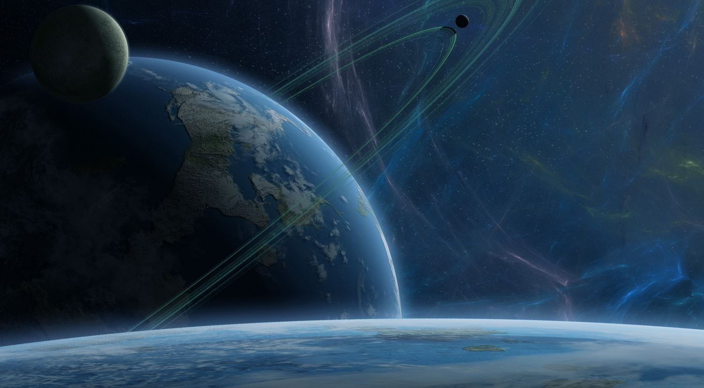
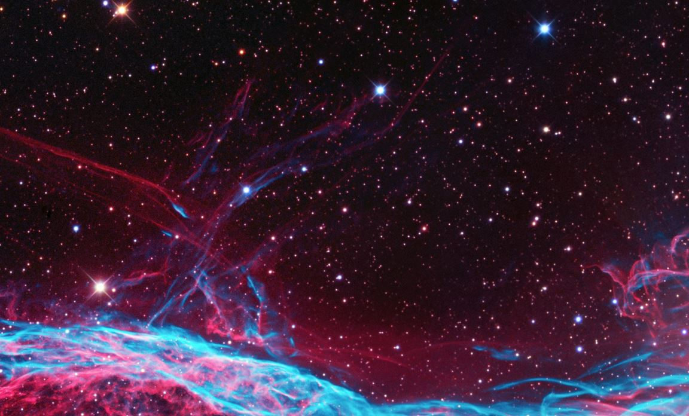

<!DOCTYPE html>
<html>
<head>
    <meta charset="utf-8" />
    <title>Level Transition Test</title>
    <style>
    	canvas	{ background: #eee; display: block; margin: 0 auto; }
		.buttons { 	
					float:left;
					position: fixed;
					left: 40%;
					display: inline-block;
				}
				#images{
				display:none;
				}

		body{
			font-weight:bold;
			font-size:large;
			background-color: #fff;
			}
    </style>
	<script type="text/javascript" src="https://cdnjs.cloudflare.com/ajax/libs/jquery/2.1.4/jquery.min.js"></script>
</head>
<body>
<div id="images">
</div>
	<div id="canvasContainer"> 
	</div>
	<div class="buttons">
		<input type="button" class="trans" id="switchLevel" onclick="switchLevel()" value="Switch Level">
	</div>
<script>
var windowWidth = $(window).width(),
	windowHeight = $(window).height();
	$("#canvasContainer").html('<canvas id="myCanvas" width="'+windowWidth+'" height="'+windowHeight+'"></canvas>');
	$("#images").append('');
	$("#images").append('');

var	bg_level1 = document.getElementById("level1"),
	bg_level2 = document.getElementById("level2"),
	canvas = document.getElementById("myCanvas"),
	ctx = canvas.getContext("2d"),
	cwide = canvas.width,
	chigh = canvas.height,
	tunnel = [],
	tunnelX = cwide/2,
	tunnelY = chigh/2,
	minRadius = 30,
	maxRadius = cwide,
	circleSpacing = 30,
	stackOfCircles = 0,
	image1 =  document.getElementById("level1"),
	image2 =  document.getElementById("level2"),
	currentImage = image1,
	maxCircles = 50,
	pictureTrigger = 200,
	fps = 30,
	colorVar = 1, 
	startColor = Math.floor(Math.random() * 300),
	ogStartColor =startColor,
	color = "hsl(" + startColor + ", 100%,50%)";

	function switchLevel(){
		if(currentImage == image1){
			currentImage == image2;
		}
		else{
			currentImage == image1;
		}
	}
	function getNewPoint(oldX,oldY){
		var newX,
			newY
			divide = Math.random(),
			first = 1 - divide,
			second = 1 - first;
			
		first *= Math.floor(Math.random()*2) == 1 ? 1 : -1;
		second *= Math.floor(Math.random()*2) == 1 ? 1 : -1;
		newX = Math.floor(first * minRadius);
		newY = Math.floor(second * minRadius);
		if(newX+oldX < canvas.width-minRadius &&newX+oldX > 0 && newY+newY < canvas.height-minRadius && newY+oldY > 0){
			newX += oldX;
			newY += oldY;
		}

		var coord = [newX,newY];
		return(coord);
	}
	
	function circle(xloc,yloc,ballradius,image){
		this.radius = ballradius;
		this.x = xloc + (ballradius/2);
		this.y = yloc + (ballradius/2);
		this.color = image;
	}
	function drawCircle(circle,image){ //image could be string: color_type or picture_name
		if(image){
			ctx.beginPath();
			ctx.arc(circle.x, circle.y, circle.radius, 0, Math.PI*2);
			ctx.fillStyle = ctx.createPattern(image, 'repeat');
			ctx.fill();
			ctx.closePath();
		}
		else{
			ctx.beginPath();
			ctx.arc(circle.x, circle.y, circle.radius, 0, Math.PI*2,false);
			ctx.fillStyle = circle.color;
			ctx.fill();
			ctx.closePath();
		}
	}
	function draw(){
		ctx.clearRect(0, 0, canvas.width, canvas.height);
		color = "hsl(" + startColor + ", 100%,50%)";
		if(tunnel[0].radius > maxRadius){
			tunnel.splice(0,1);
		}
		if(stackOfCircles > pictureTrigger){
			if(tunnel.length > 1){
				tunnel.splice((tunnel.length-1),1);
			}
		}
		else{
			var newCircle = new circle(tunnelX,tunnelY,minRadius,color);
			tunnel.push(newCircle);
			stackOfCircles++;
		}
		for(var i =0; i< tunnel.length; i++){
			var thisCircle = tunnel[i];
			//var nextCircle = tunnel[i+1];
			if(startColor+colorVar > ogStartColor+60){
				startColor = ogStartColor;
			}else{
				startColor +=colorVar;
			}
			if(stackOfCircles > pictureTrigger && i == (tunnel.length-1)){
				drawCircle(thisCircle,currentImage); 
			}
			else{
				drawCircle(thisCircle);
			}

			thisCircle.radius += circleSpacing;

			//var coords = getNewPoint(thisCircle.x,thisCircle.y);
			//nextCircle.x = thisCircle.x;
			//nextCircle.y = thisCircle.y;
			//thisCircle.x = coords[0];
			//thisCircle.y = coords[1];
			//tunnelX = thisCircle.x;
			//tunnelY = thisCircle.y;
			console.log(stackOfCircles+":"+pictureTrigger);
		}
		if(tunnel.length == 0){
			clearInterval(timer);
		}
	}
	function init(){
		var newCircle = new circle(tunnelX,tunnelY,minRadius,color);
		startColor +=colorVar;
		tunnel.push(newCircle);
		timer = setInterval(function() {draw()}, (1000/fps));
	}
	init();

</script>
</body>
</html>